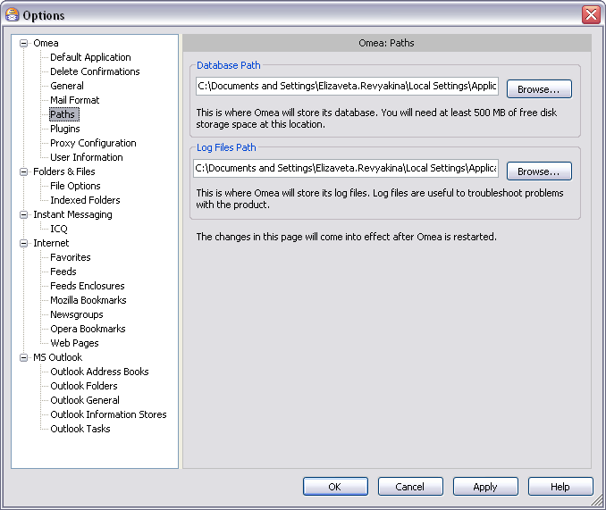
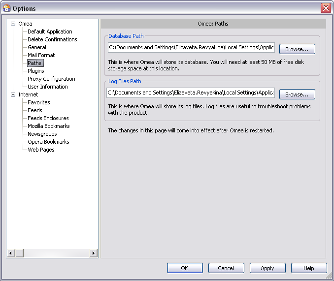

Paths
You can access this option from the Main menu: Tools | Options: Omea: Paths
These options control where Omea ReaderOmea Pro stores and reads data on your computer.
 Omea Paths options in the Options Dialog
Options
Database path
Omea ReaderOmea Pro creates and uses a special database to index and track your computer’s resources. The database can be stored anywhere on your computer provided there is at least 50050 megabytes of free disk space.
This option enables you specify the storage location for the database.
The default location is under the Documents and Settings\Local Settings\Application
Data path for your Windows user profile (see picture, above). This
location should be fine unless there is a problem with disk space. For
example, the default location is typically on drive C:, but if you are
short on disk space on that volume and you have a volume with more space
(drive D:, for example), you can change the storage location to a folder
on D: drive.
If you change the database path, you must close Omea Reader Omea Pro and restart it to effect the change.
Log Files Path
As you work with Omea ReaderOmea Pro, it quietly saves information about its state and operations behind the scenes. This information is written to a Log file. A new Log file is created each time you run Omea Reader Omea Pro. Old Log files are automatically deleted after several days.
If you should ever experience a problem such as an exception error or crash, the Log file for the session can help JetBrains technical support with troubleshooting.
This option enables you to specify a folder for storing the log files. The default path is the folder where you installed the product, and that should be fine for most people. Others, such a plugin developers using the Omea API to create plugins, may want to keep log files in a more accessible location.